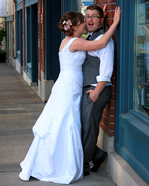

About Ryan Gilbert
My name is Ryan Gilbert when I finished High School I joined the Army and became a Scout and a Paratrooper. I decided not to re-enlist mainly because I came to the conclusion that I hate running and on average I ended up having to run 45 miles a week. There was a number of other reason also but, after 4-years I was ready to move on. For several years I jumped from job to job trying to figure out what I wanted to do when I grow up. I worked as a forester, wild land firefighter, a carpenter, cabinet maker, a cook, welder, an HVAC tech. a roofer, a waste water treatment operator and probably some others I cant think of right now. I found my self learning these jobs and working them for about six months then I would get bored and start looking for something different.
While I was in the Army I picked up a 1995 era HTML book and started working through it. This was around 2004-2005 so the book was already very outdated but, it got me interested. I always had inclinations to become an entrepreneur last year I decided that I wanted to start a web design business. The only problem was is had been years since I since I had even owned a computer or messed with HTML. So I hit the books and found myself at Clark College. I also just got married about 6 months ago which should explain the cheesy wedding photo. If you would like to email me see my Contact Page